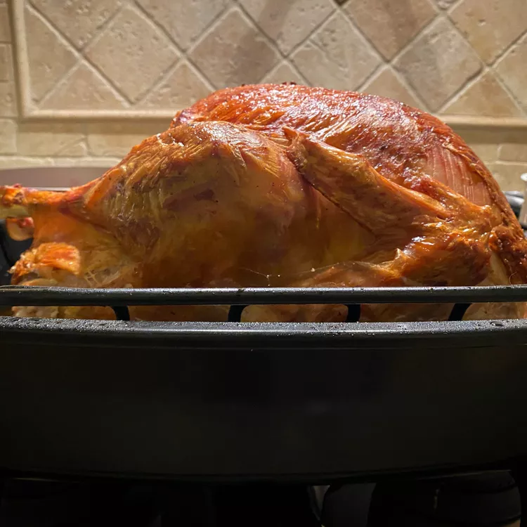

Back to Home
Turkey In a Bag

Ingredients
- Turkey
- Seasonings
- Flour
- Vegetables
- Turkey Bag
How to Cook Turkey In a Bag
- Prepare the Turkey: Remove and discard the giblets, pat the turkey dry, and season with salt and pepper.
- Pack the Bag: Sprinkle the bottom of the bag with flour. Place the turkey in the bag along with cut celery and onions. Seal the bag, transfer to a roasting pan, and use a fork to poke several holes in the bag.
- Roast the Turkey: Bake in a preheated oven until the juices run clear. An instant-read thermometer inserted into the thigh meat should read 180 degrees F.